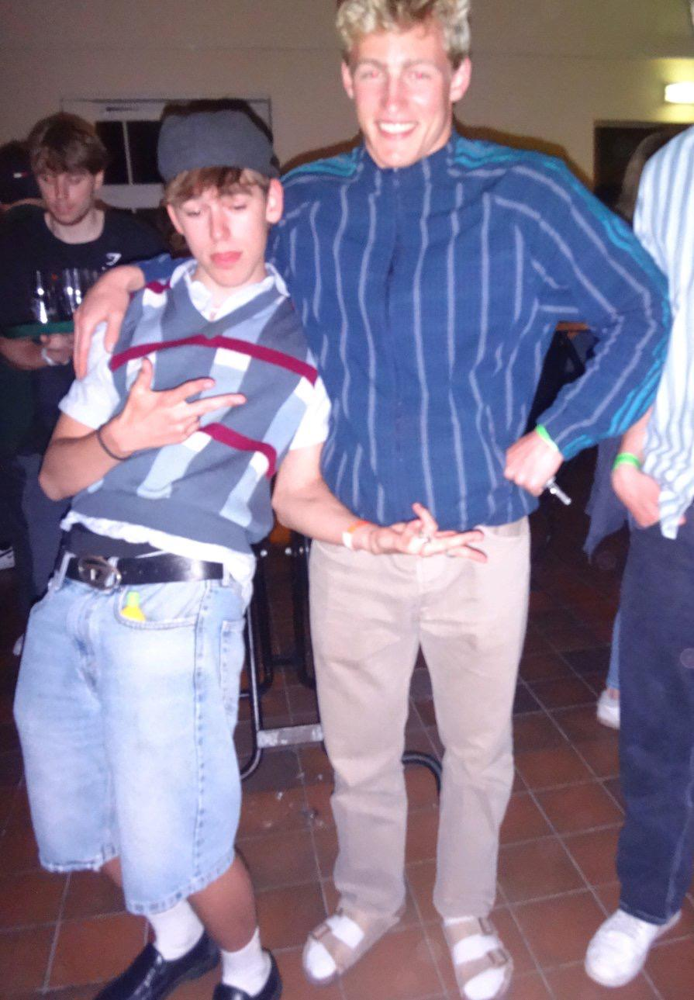
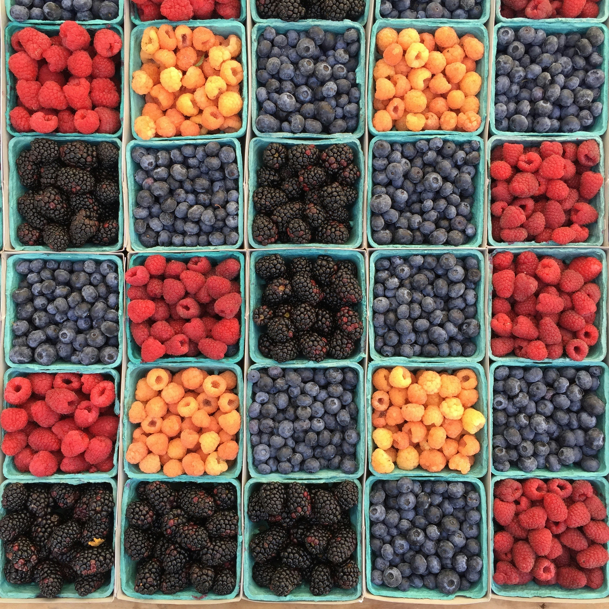

Über JagMarket
Wir bringen Ihnen die Produkte, die Sie lieben – schnell und zuverlässig.
Kontakt
JagMarked UG
Test Straße 187
52078 Aachen
info@jagmarked.de
Unsere Transportgalerie

Die Gründer in voller Pracht

Unsere Geschichte
Seit 2005 stehen wir für Innovation und Qualität.
JagMarket wurde im Jahr 2005 mit dem Ziel gegründet, den Transportsektor zu revolutionieren. Unser Weg war gepflastert mit Herausforderungen, aber dank eines engagierten Teams und innovativer Technologie haben wir es geschafft, eine starke Basis aufzubauen. Heute bedienen wir zahlreiche Branchen und bieten Lösungen, die auf Zuverlässigkeit und Effizienz basieren. Unsere Vision für die Zukunft ist es, nachhaltige Transportlösungen zu entwickeln und gleichzeitig den höchsten Qualitätsstandards gerecht zu werden...